Slipday, explained
Rocket launches slip. A few days late is normal. Near the Moon's south pole the Sun stays very low, so a few days can decide whether a lander gets enough sunlight and can still talk to Earth. Slipday answers one question: if the launch slips, can we still land at this spot? It answers yes, not sure or no, and says how many days of slip the plan can take.
Watch it (about 3 minutes)
The video and this page follow the same order. Every number in them is on the app's screen.
- Slip margin
- How many days the landing can slip and still work.
- Landing scatter
- A lander rarely touches down exactly where it aims. Slipday checks 13 touchdown points within 100 m of the target, and says Yes only if all of them pass.
- Skyline
- The outline of hills and crater rims around the site. If the Sun or the Earth is below it, the lander gets no sunlight or no radio contact.
- Fragile
- A Yes where the Sun or the Earth sits less than 0.27 degrees above the skyline at a touchdown point. A small error in the map could flip it.
1The question
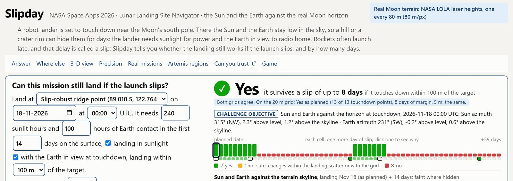
What you see
The title, three plain sentences on what the app answers, a bar of links to each part of the page, and one sentence you can edit: where you land, the date and hour, how many hours of sunlight and radio contact the mission needs, how many days on the surface, and how close to the target it lands.
What it means
The page opens on an example: a ridge at 89.010 S, 122.764 E, landing on 18 Nov 2026, needing 240 hours of sunlight and 100 hours of contact with Earth in the first 14 days. Change any part and the answer updates.
What it can't tell you
It does not plan the launch. The 240 and 100 hours are example needs, not a real mission's.
2Yes, not sure or no, and the slip margin
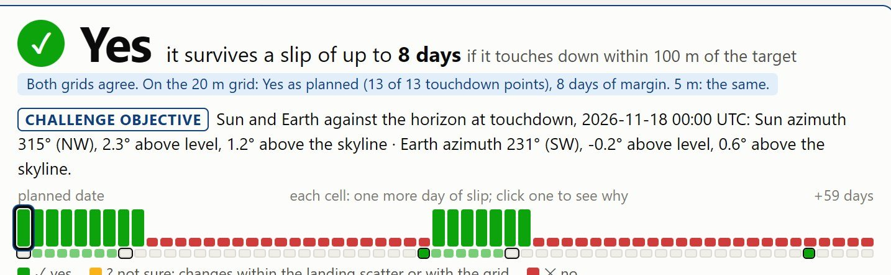
What you see
A big Yes: "it survives a slip of up to 8 days if it touches down within 100 m of the target". Under it, a strip with one cell per day of slip: green yes, amber not sure, red no.
What it means
The landing can slip up to 8 days and still work. Yes needs all 13 touchdown points to pass, on two terrain maps. The line under it says NASA's finer 20 m map agrees: 13 of 13 points, 8 days.
What it can't tell you
The Yes holds only if the lander comes down within 100 m. A wider miss can change it.
3The challenge objective, in numbers
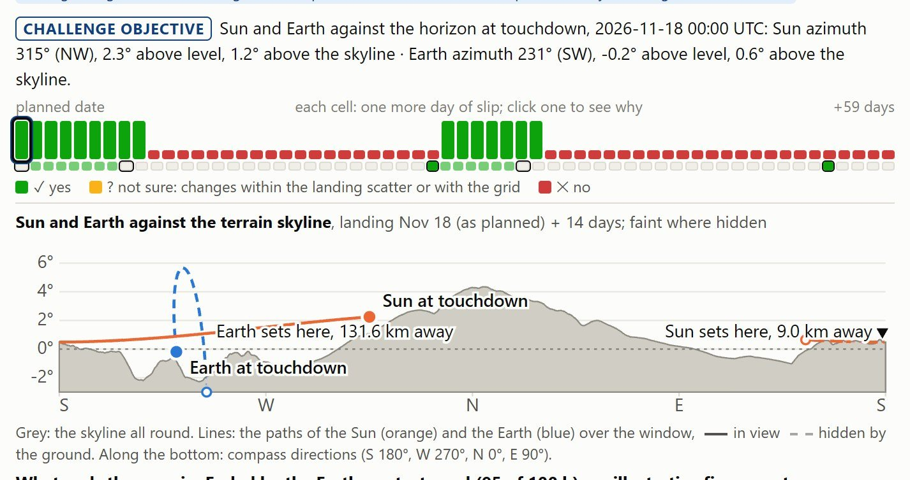
What you see
A line labelled "Challenge objective": at touchdown the Sun stands at azimuth 315° (north-west), 1.2° above the skyline, and the Earth at azimuth 231° (south-west), 0.6° above it. Below it, the skyline all round with the paths of the Sun and the Earth.
What it means
This is the challenge's one firm goal: show the Sun and the Earth against the real horizon for a chosen place and time. Both are only just above the hills.
What it can't tell you
The skyline comes from an 80 m terrain map. Narrow ridges can come out a little too high or too low.
4Launch slipped by N days
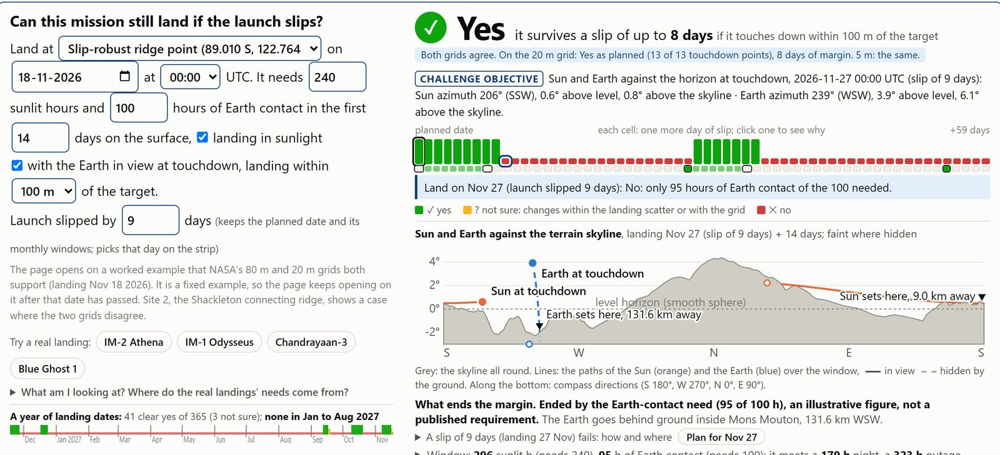
What you see
Type how many days the launch slipped. At 9 days a banner reads: "Land on Nov 27 (launch slipped 9 days): No: only 95 hours of Earth contact of the 100 needed." The Earth goes behind ground 131.6 km away.
What it means
Clicking a day on the strip does the same. The plan and its monthly windows stay as they were.
What it can't tell you
Typing a new date instead makes it the new plan, with its own windows.
5Next windows, other sites, and Download
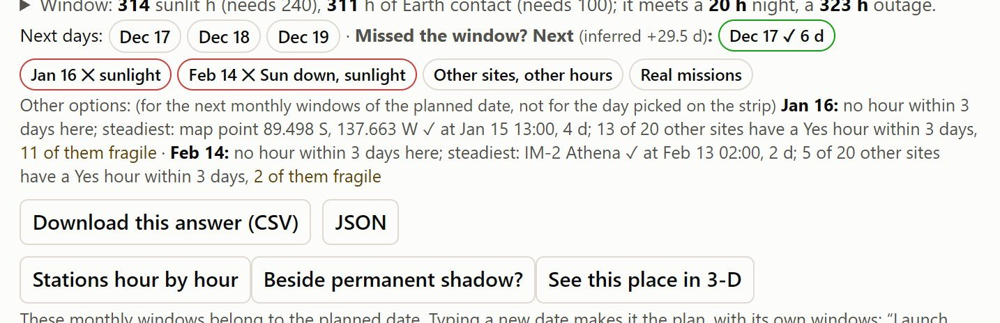
What you see
"Missed the window? Next": Dec 17 ✓ 6 d, Jan 16 ✕ sunlight, Feb 14 ✕. "Other sites, other hours" finds that in January 13 of 20 other sites have a Yes hour within 3 days, 11 of them fragile. "Download this answer" saves it all as CSV or JSON.
What it means
A lander can launch only a few days each month; miss them and the landing moves about a month later. Fragile means the Sun or the Earth is less than 0.27° above the skyline at a touchdown point, so a small error could flip it.
What it can't tell you
The monthly step is our reading of mission reports. The other-site search answers the monthly windows, not the slipped day.
6The ground in 3-D
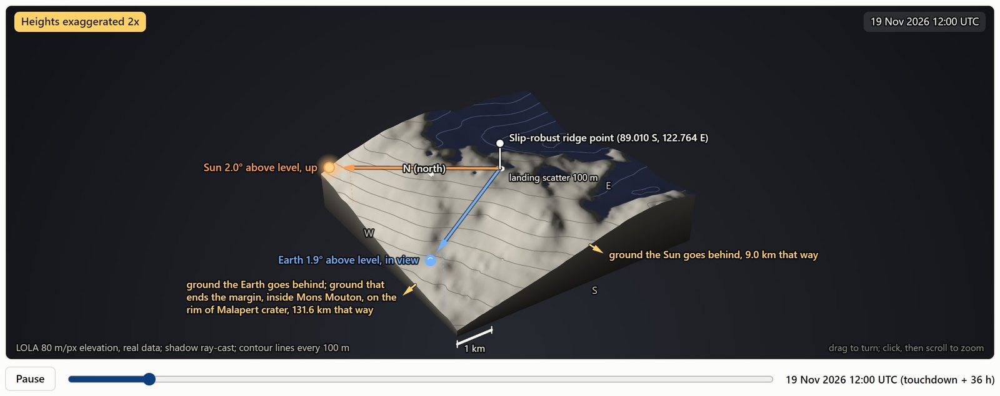
What you see
The real ground around the site, built from NASA's LOLA laser altimeter (an instrument on the Lunar Reconnaissance Orbiter that measured heights with laser pulses). Press play to move through the landing window.
What it means
The Sun circles low in the sky, so long shadows sweep across the ground. You can see which ridge blocks the Sun or the Earth.
What it can't tell you
It is a model of the same 80 m map, not a photograph. Heights are drawn twice as tall.
7Your own site
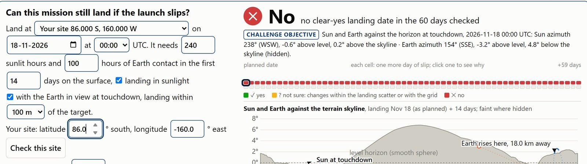
What you see
Pick "Your own coordinates…" in the card's site list and type a latitude in degrees south and a longitude. Here: 86.000 S, 160.000 W. The card says No, and the objective line shows the Earth 4.8° below the skyline at touchdown.
What it means
The same checks run for any spot near the pole, and any of the 32 listed sites can be picked the same way.
What it can't tell you
Far from the pole there is no terrain data, and the answer uses a smooth Moon; the page warns about it.
8The slip-margin map
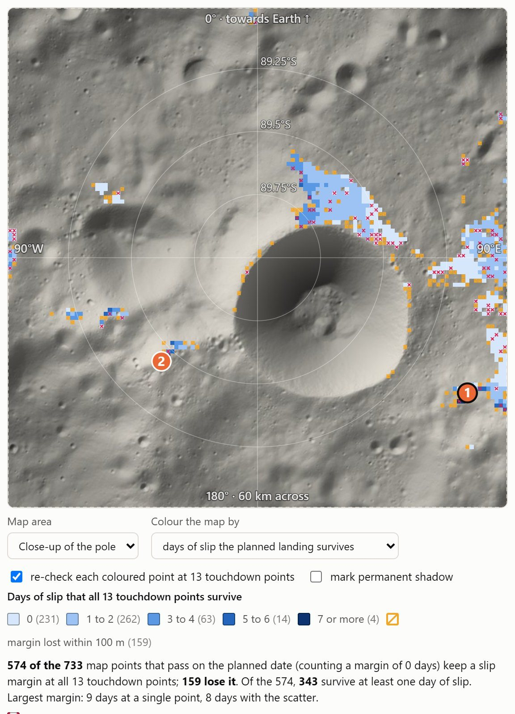
What you see
The ground near the pole, coloured by how many days of slip each spot survives, checked at 13 touchdown points. 574 of the 733 spots that pass on the planned date keep a margin; 159 lose it; 343 survive at least one day of slip.
What it means
You can see where a slip is safe and where it is not. Small red crosses mark spots where NASA's finer 20 m map disagrees.
What it can't tell you
Where the two maps disagree, the 80 m map is nearly always the more hopeful one.
980, 20 and 5 m terrain
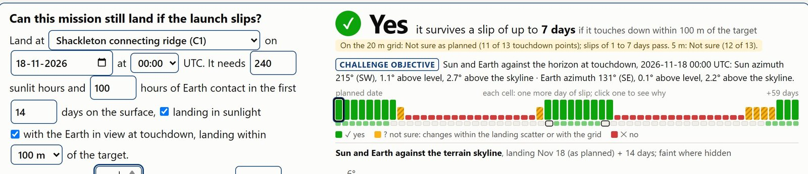
What you see
At the Shackleton connecting ridge the card says Yes, for up to 7 days. The line under it: on the 20 m grid, Not sure (11 of 13 touchdown points); 5 m: Not sure (12 of 13).
What it means
Finer maps show small bumps that a coarse map smooths away. Here they turn a Yes into Not sure, so the app shows all three answers.
What it can't tell you
The 20 m and 5 m maps cover only small areas, so most spots get the 80 m answer alone.
10Is the ground flat enough?
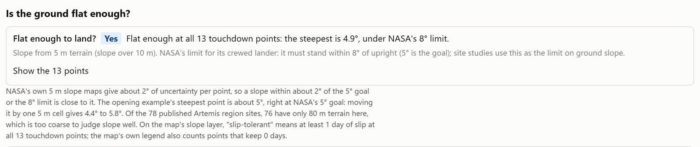
What you see
"Flat enough at all 13 touchdown points: the steepest is 4.9°, under NASA's 8° limit." NASA's crewed lander may lean at most 8° (5° is the goal).
What it means
The opening example is flat enough, but only just: its steepest point is about 5°, right at the goal. Moving it by one 5 m cell gives 4.4° to 5.8°.
What it can't tell you
NASA's slope maps are uncertain by about 2° per point, and 76 of the 78 published region sites have only 80 m terrain, too coarse for slope. No boulders are seen.
11Chance of a safe touchdown
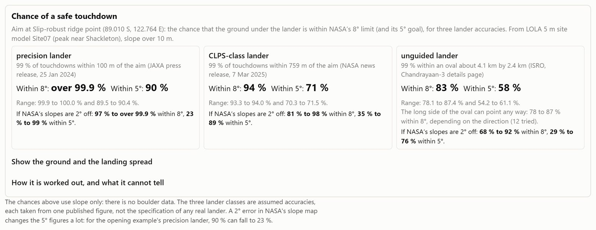
What you see
For three assumed kinds of lander, the chance the ground under it is within 8°: over 99.9 % for a precision lander, 94 % for a CLPS-class lander (like the commercial landers NASA buys rides on).
What it means
A lander does not come down exactly on target, so the slope that matters is spread over where it might land.
What it can't tell you
Slope only, no boulder data. The lander accuracies are assumptions taken from one published figure each.
12A real landing: IM-1
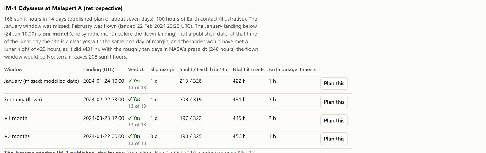
What you see
The IM-1 lander planned about seven days on the surface. The table says Yes, with 1 day of margin, for the February window it flew, and also for the January window it missed.
What it means
The app agrees with what happened: sunlight was not what stopped IM-1. It replays a published plan; it is not a forecast.
What it can't tell you
The January landing time is modelled. The slope check puts IM-1's target at about 12°, too steep, and IM-1 tipped over on landing; the app knows nothing about the lander's hardware.
13NASA's nine Artemis regions
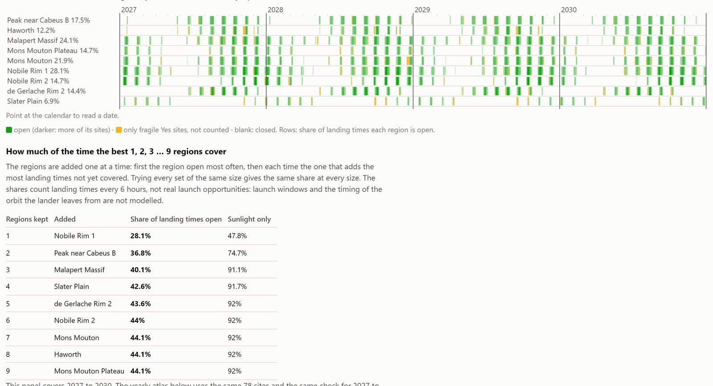
What you see
A calendar of NASA's nine possible Artemis landing regions from 2027 to 2030. The best region is open at 28.1% of landing times, three regions at 40.1%; with sunlight only, 47.8% and 91.1%.
What it means
NASA writes that more than one region must be kept, because one gives too few chances. The app shows it using 78 landing sites a research team published (Wueller et al. 2026).
What it can't tell you
The shares count landing times every 6 hours, not real launch chances. The cap with all nine regions comes from the example Earth-contact need.
14Which years suit a landing, 2027 to 2035
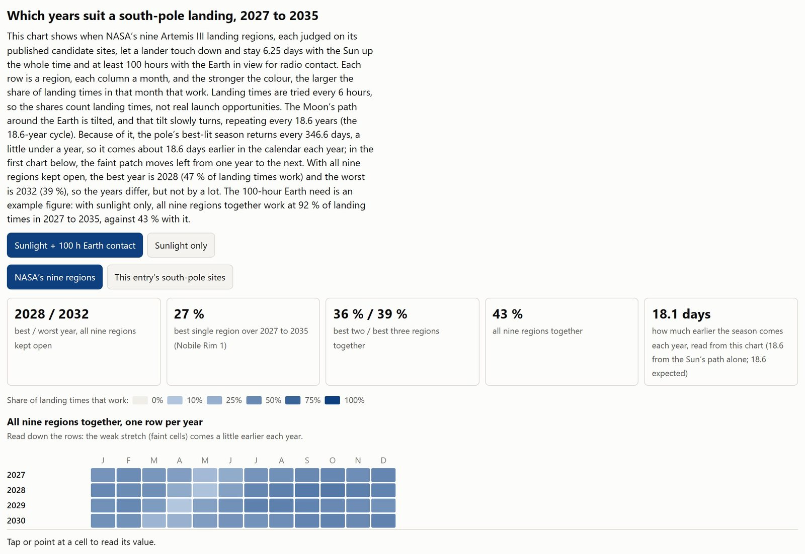
What you see
The same check run for every year from 2027 to 2035, one row per year and one column per month. Darker cells are months when more landing times work.
What it means
The weak season comes a little earlier each year, because the Moon's seasons follow a 346.6-day year.
What it can't tell you
Over nine years its averages come out about a point lower than the 2027 to 2030 panel; for 2027 to 2030 the two agree exactly.
15Relay satellites
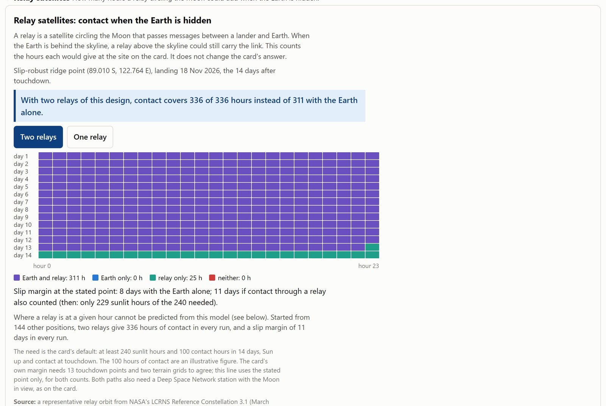
What you see
When the Earth is behind the skyline, a relay satellite circling the Moon could pass messages on. With two relays of a NASA design, contact covers 336 of 336 hours instead of 311 with the Earth alone.
What it means
Relays would remove the radio limit at many sites. The main answer still counts the Earth alone.
What it can't tell you
The relay orbit is a representative NASA design that is not final and not in service; where a relay is at a given hour is illustrative.
16Listen to the landing window
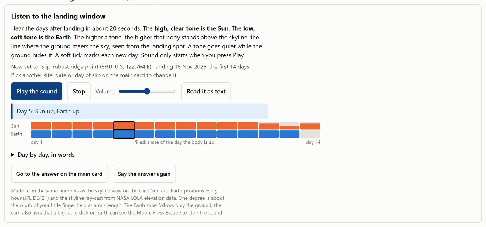
What you see
"Play the sound" turns the first 14 days into about 20 seconds of sound: a high tone for the Sun, a low tone for the Earth, quiet while the ground hides them. "Read it as text" gives the same in words.
What it means
It helps anyone who cannot see the chart, and screen readers also hear the card's answer.
What it can't tell you
Nobody has tested it yet with a real screen reader.
17Be the mission planner
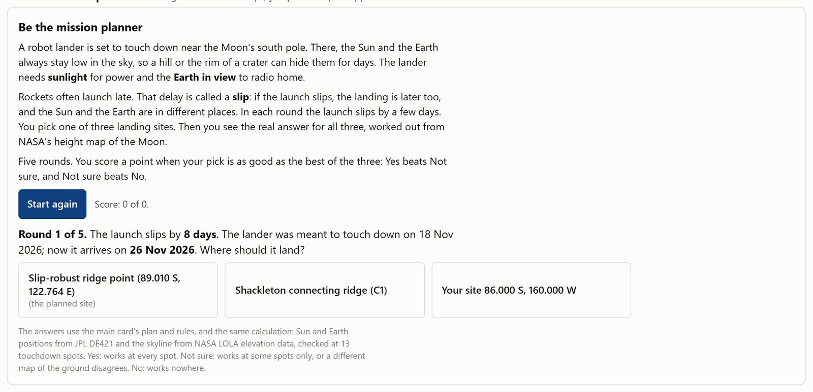
What you see
A short game for students: the launch slips by a few days, you pick one of three sites, and the app shows the real answer for each, with one plain reason. Five rounds.
What it means
It teaches the same idea as the card: a few days can move the Sun and the Earth behind the hills.
What it can't tell you
A round where no site works does not count.
18What it cannot tell you
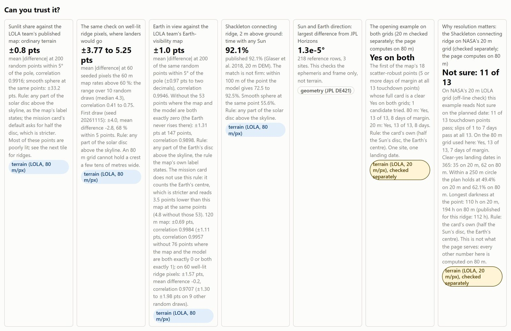
What you see
"Can you trust it?" compares the app with published NASA maps. Sunlight agrees within 0.8 points on ordinary ground, and within 3.77 to 5.25 points on the bright ridges where landers would go.
What it means
The model is close on average, and less exact on narrow ridges.
What it can't tell you
The 80 m terrain is coarse and can be too hopeful. The sunlight and contact needs are examples. There is no battery or heat model. Fragile answers can flip with a small change.
The data behind it
Everything comes from public data. These are the main sources.
- Terrain: NASA's LOLA laser altimeter maps of the south pole, 80 m, 20 m and 5 m (NASA PGDA, product 90; 5 m site models), plus coarser LOLA maps in NASA's Planetary Data System.
- Checking sunlight and Earth views: the LOLA team's average sunlight and Earth-visibility maps (illumination maps).
- Where the Sun and the Earth are: NASA JPL's DE421 planetary positions, checked against JPL Horizons.
- Deep Space Network stations: DSN Telecommunications Link Design Handbook 810-005.
- Artemis regions: NASA's update on the Artemis III landing regions and the LPSC 2026 site-selection abstract.
- Landing sites in the regions: Wueller et al. 2026, JGR Planets (CC BY 4.0), data on Zenodo.
Challenge resources
- LROC QuickMap, an online map of the Moon: every site in the app links to the same spot there. No data is taken from it.
- JPL Horizons, which gives where the Sun, Earth and Moon are at any time: used to check the app's Sun and Earth directions.
- NASA Moon Trek, an online 3-D Moon viewer: every site links to the same spot there. No data is taken from it.
- The Canadian Space Agency's Moon exploration page: background reading only. It holds no data, and nothing in the app comes from it.